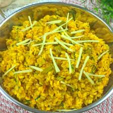

Maash Daal

About Maash Daal
Mash ki Daal or Urad Daal, Pakistani and North Indian style.
It's made by cooking Urad Daal (white lentils) with spices, and finishing off with a baghar / temper of fried onions.
Go Back